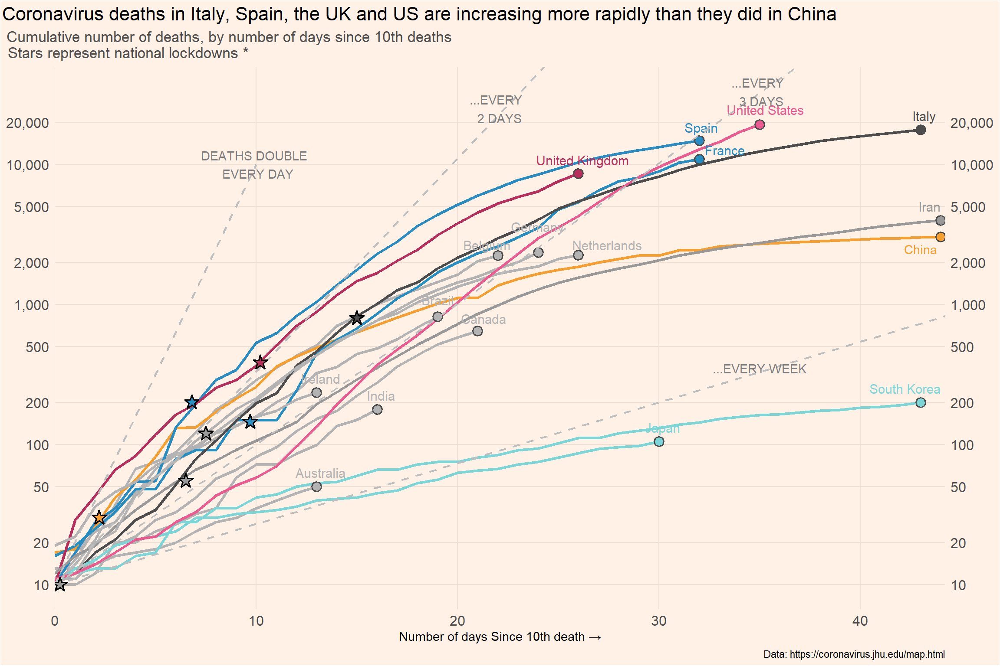

Line chart
Used geometries
Main geometry:
geom_line
Secondary geometries:
geom_pointgeom_text_repelgeom_ablinegeom_segmentgeom_star
We need to load the following packages:
We load the file covid_data.csv in R.
library(readr)
covid_data <- read_csv("data/covid_data.csv", col_types = cols(date = col_date(format = "%m/%d/%Y")))
head(covid_data)# A tibble: 6 × 14
iso3c country date confirmed deaths recovered total_tests region income
<chr> <chr> <date> <dbl> <dbl> <dbl> <dbl> <chr> <chr>
1 ABW Aruba 2020-03-13 NA NA NA NA Latin … High …
2 ABW Aruba 2020-03-14 NA NA NA NA Latin … High …
3 ABW Aruba 2020-03-15 NA NA NA NA Latin … High …
4 ABW Aruba 2020-03-16 NA NA NA NA Latin … High …
5 ABW Aruba 2020-03-17 NA NA NA NA Latin … High …
6 ABW Aruba 2020-03-18 NA NA NA NA Latin … High …
# ℹ 5 more variables: population <dbl>, pop_density <dbl>,
# life_expectancy <dbl>, gdp_capita <dbl>, timestamp <dttm>Let’s have a look at the types of variables:
glimpse(covid_data)Rows: 132,236
Columns: 14
$ iso3c <chr> "ABW", "ABW", "ABW", "ABW", "ABW", "ABW", "ABW", "ABW"…
$ country <chr> "Aruba", "Aruba", "Aruba", "Aruba", "Aruba", "Aruba", …
$ date <date> 2020-03-13, 2020-03-14, 2020-03-15, 2020-03-16, 2020-…
$ confirmed <dbl> NA, NA, NA, NA, NA, NA, NA, NA, NA, NA, NA, NA, NA, NA…
$ deaths <dbl> NA, NA, NA, NA, NA, NA, NA, NA, NA, NA, NA, NA, NA, NA…
$ recovered <dbl> NA, NA, NA, NA, NA, NA, NA, NA, NA, NA, NA, NA, NA, NA…
$ total_tests <dbl> NA, NA, NA, NA, NA, NA, NA, NA, NA, NA, NA, NA, NA, NA…
$ region <chr> "Latin America & Caribbean", "Latin America & Caribbea…
$ income <chr> "High income", "High income", "High income", "High inc…
$ population <dbl> 106766, 106766, 106766, 106766, 106766, 106766, 106766…
$ pop_density <dbl> 593.1444, 593.1444, 593.1444, 593.1444, 593.1444, 593.…
$ life_expectancy <dbl> 76.293, 76.293, 76.293, 76.293, 76.293, 76.293, 76.293…
$ gdp_capita <dbl> 26631.47, 26631.47, 26631.47, 26631.47, 26631.47, 2663…
$ timestamp <dttm> 2021-10-09 02:10:32, 2021-10-09 02:10:32, 2021-10-09 …The data frame contains 132236 rows and 14 variables. There are 8 numeric variables, 4 variables of character type, and 2 variables with dates (one of date type and the other of dttm type):
- iso3c: ISO3c country code as defined by ISO 3166-1 alpha-3
- country: Country name
- date: Calendar date
- confirmed: Confirmed Covid-19 cases as reported by JHU CSSE (accumulated)
- deaths: Covid-19-related deaths as reported by JHU CSSE (accumulated)
- recovered: Covid-19 recoveries as reported by JHU CSSE (accumulated)
- total_tests: Accumulated test counts as reported by Our World in Data
- region: Country region as classified by the World Bank (time-stable)
- income: Country income group as classified by the World Bank (time-stable)
- population: Country population as reported by the World Bank (original identifier ‘SP.POP.TOTL’, time-stable)
- pop_density: Country population density as reported by the World Bank (original identifier ‘EN.POP.DNST’, time-stable)
- life_expectancy Average life expectancy at birth of country citizens in years as reported by the World Bank (original identifier ‘SP.DYN.LE00.IN’, time-stable)
- gdp_capita: Country gross domestic product per capita, measured in 2010 US-$ as reported by the World Bank (original identifier ‘NY.GDP.PCAP.KD’, time-stable)
- timestamp: Date and time where data has been collected from authoritative sources
The data cover a period from 2019-12-31 to 2021-10-07.
focus_cn <- c("AUS", "BEL", "BRA","CAN","CHN", "FRA", "DEU","GBR",
"IND", "IRN", "IRL","JPN","ITA", "NLD", "KOR",
"ESP", "USA")
covid_deaths <- covid_data %>%
select(date, country, iso3c, deaths) %>%
group_by(iso3c) %>%
arrange(date) %>%
filter(deaths > 9, date < "2020-04-09") %>%
mutate(days_elapsed = date - min(date),
end_label = ifelse(date == max(date), country, NA),
end_label = case_when(iso3c %in% focus_cn ~ end_label,
TRUE ~ NA_character_),
cgroup = case_when(iso3c %in% focus_cn ~ country,
TRUE ~ "OTHER")) %>%
filter(days_elapsed < 45) |>
ungroup()We also set particular colors for the selected countries:
# Colors
cgroup_cols <- c("gray70", "gray70", "gray70", "gray70",
"#F69E2F", "#268EC1","gray70","gray70",
"gray60", "gray70", "gray30","#7CD6D7",
"gray70","#7CD6D7","#298DC3", "#B82E5D",
"#EC5B8F")
# stars
df_stars <- data.frame(
x_star = c(6.8, 9.7, 10.2, 15, 7.5, 6.5, 2.2, 0.25),
y_star = c(200, 145, 385, 800, 120, 55, 30, 10),
group_star = c("a", "a", "b", "c", "d", "d", "e", "d")
)
cgroup_cols2 <- c("#268EC1", "#B82E5D", "gray30", "gray60", "#F69E2F")
# line annotations
df_lines <- data.frame(
x = c(10, 22, 35, 35),
y = c(10^4, 2.5*10^4, 3.3*10^4, 350),
labels = c("DEATHS DOUBLE \n EVERY DAY", "...EVERY \n 2 DAYS",
"...EVERY \n 3 DAYS", "...EVERY WEEK")
)death_log_curves <- covid_deaths %>% filter(cgroup != "OTHER") %>%
ggplot(mapping = aes(x = days_elapsed, y = deaths,
color = cgroup, label = end_label,
group = iso3c)) +
geom_line(size = 1.2) +
geom_point(data = covid_deaths |>
dplyr::group_by(cgroup) |> filter(days_elapsed==max(days_elapsed),
cgroup != "OTHER"),
aes(x = days_elapsed, y = deaths, fill = cgroup), shape = 21,
size = 3.3, stroke = 1.0, color = "grey30") +
geom_text_repel(nudge_x = 0.2,
nudge_y = 0.1, size = 4,
segment.color = NA) +
scale_color_manual(values = cgroup_cols) +
scale_fill_manual(values = cgroup_cols) +
geom_abline(intercept = log10(10), slope = log10(1.42), linetype = "dashed", color = "gray", linewidth = 0.8) +
geom_abline(intercept = log10(10), slope = log10(1.26), linetype = "dashed", color = "gray", linewidth = 0.8) +
geom_abline(intercept = log10(10), slope = log10(1.105), linetype = "dashed", color = "gray", linewidth = 0.8) +
geom_segment(aes(x = 0, y = 10,
xend = 10, yend = 10000), linetype = "dashed", color = "gray", linewidth = 0.8) +
new_scale_fill() +
geom_star(data = df_stars, aes(x = x_star, y = y_star, fill = group_star), starstroke = 0.9, size = 3.5, inherit.aes = F) +
scale_fill_manual(values = cgroup_cols2) +
scale_x_continuous(expand = c(0, 0)) +
scale_y_log10(
label = scales::comma, sec.axis = dup_axis(), limits = c(10, 33000),
breaks = c(10, 20, 50, 100, 200, 500, 1000, 2000, 5000, 10000, 20000)) +
labs(x = "Number of days Since 10th death →",
title = "Coronavirus deaths in Italy, Spain, the UK and US are increasing more rapidly than they did in China",
subtitle = "Cumulative number of deaths, by number of days since 10th deaths \n \ \ \ \ Stars represent national lockdowns *",
caption = "Data: https://coronavirus.jhu.edu/map.html") +
theme(panel.background = element_rect(fill = "#FFF1E6"),
plot.background = element_rect(fill = "#FFF1E6"),
panel.grid.major = element_line(color = "#EEE0D5"),
panel.grid.minor = element_blank(),
plot.title = element_text(size = 16, hjust = -0.95),
plot.subtitle = element_text(size = 13, hjust = -0.11, color = "grey30"),
axis.title.y = element_blank(),
axis.text = element_text(size = 12),
axis.ticks = element_blank(),
legend.position = "none"
) +
annotate("text", x = df_lines$x, y = df_lines$y, label = df_lines$labels, color = "grey50") +
annotate("text", x = 43, y = 2.5*1000, label = "China", color = "#F69E2F")
death_log_curves
